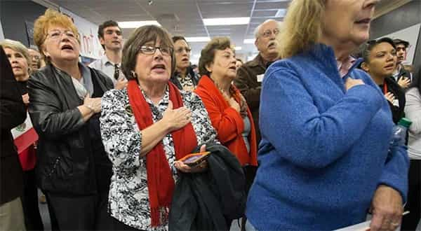
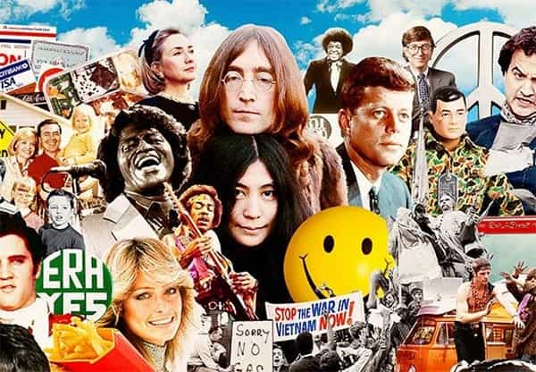
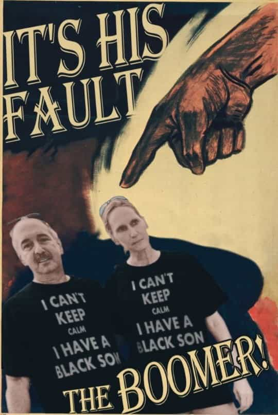

André is a young European who left his decaying country in 2012 for greener pastures. He enjoys exploring subterranean places, reading about a host of interconnected topics, and yearns for Tradition.


Some weeks ago, I went to a relative’s wedding. There were many boomers, including close relatives of mine I had not met for years. Too many boomers in fact. All of them with no exception are deeply flawed, which is also true for many non-related boomers I intersected with occasionally.
One of these boomers is a journalist. Everything that applies to an average journalist applies to him at an even more pronounced degree. He’s a leftist who follows blindly everything the media says on any relevant topic, which makes impossible to even speak honestly with him on a number of daily millennial’s issues.
Another one is a female. She claims to be friendly to traditionalism, but tends to mix it with New Ageism, has a long history of alcohol abuse, cannot keep money for long on her bank account and believes she’s always right. You can speak with her about a number of relevant issues, and even about things to talk about with a girl, as long as you let her take life decisions for you.
Another is an engineer, who hates the journalist for being more erudite than himself, but also thinks his grandfathership makes him impervious to mistakes and falsity. He invited his daughter-in-law at home when she divorce-raped his son and believes feminism, as well as most lefty “progress”, is great. Not to mention several others of the same kind.
Here are some reasons why, truly, boomers are the worst generation alive on Earth—or at least inside the Western world—today.
If they weren’t damn leftists, ardently supporting all the “minorities” against their own sons and grandsons, this would not be such a problem. But they do, and their bubble allows them to feed on mainstream media daily. They went through decades of prosperity, knew nothing but growth and full employment, and now that they’re old and rich, their preach us from their easy position without having the least understanding of what the millennials are going through.
This is a peculiar boomer thing. I have two grandmothers (78 and 91) whom I can talk with about almost anything, including feminism and mass immigration. Both grandmothers tend to disagree at least a bit with me, but they can hear and process what I say. One of them agrees that the reference point today is completely skewed against men and marital stability—even though she was once betrayed by a man.
Boomers are younger than that, but boomers can’t hear. Try to mention a relevant topic and they’ll shoot you down without second thought. Get attacked by SJWs or so-called minorities and they will rush to virtue-signal against you even when their blood runs in your veins. Boomers become hysterical when you mention how wrecked, dispossessed and disenfranchised we are.
The worst thing is, they are often the ones who tread on the “forbidden” topics but they won’t accept hearing anything non-leftist about these topics. They have absolutely no respect for either difference of opinion and think normal that they can decide 100% on what can be said on anything, whereas their adult children are supposed to behave like passive, dignity-deprived slaves. What kind of older parent behaves like that?

Boomers know about just everything, they are absolutely wise and ripened and, as many say, “you won’t teach life to me, I’m XYZ years old.” They ask at best superficial questions and want to do all the talking about, say, absolutely everything. Their narcissism projects into every area. They tend to stifle and suffocate everything way more than the Silent Generation—remember, their parents who went to war against the Axis and got labelled “fascists” by their ungrateful hippie sons—ever did.
Boomers don’t have to take any responsibility, as they already have real estate, life insurance, 401(k) and so on. They can sip wine between a trip to the spa and another trip to a touristic destination, cowardly skilfully avoid the mass of thugs and/or immigrants they often supported, and pretend they know better about immigrants, womyn, food, how to find a job, who we are, up to conspiracy theories when the boomer you meet with is so inclined.
Some boomers provide financial help, others do so only a bit and reluctantly, others won’t help at all, but sooner or later all take that unbearable preaching tone. No matter if they follow the mainstream to the core or pretend to dissent, they all tend to be dismissive towards their younger peers. And even though they assume no responsibility and behave more like arrogant parasites than inspiring figures, they want the same respect than the ancients of before—the very same respect they often fail to give to the Silent Generation.
I have noticed that boomers will accept discussing relevant topics only with guys who are older than 40 or with girls. When you, a millennial or an X who’s less than 40, beg to differ on one of these topics, they automatically assume your views and your experience are worth nothing.
Again and again, I’ve seen boomers discussing globalism, freemasonry, the shortcomings of feminism or other non-mainstream topics with +40 years old people, to dismiss younger fellows on sight—even when they started discussing said topics.
Same boomers think it is absolutely normal to have their little princesses saying things like “all guys are idiots” or suggesting that no man is worth their inflated egos, but will be offended if you mention how difficult it became for a sane man to find a sane woman. Boomers’ daughters are pure angels who would never err or offend. Boomers’ sons are dirt to be trodden upon.
Don’t tell them you are going from skinny to buff, even when you already gained 10 or 15 visible pounds of muscle, they will laugh at your quest for strength and say you should eat less proteins or something.
Who bought off all the real estate? Who keeps benefiting from retirement pensions in a system that will collapse well before we age? Who keeps most important positions to retire as late as possible—and then live in luxury with retirement pensions higher than a honest, qualified young man’s wage? Who is OK with forcing the young into paying astronomic rents, putting us in a cutting-throat competition for ill-paid jobs and women, then forbid to even talk about the arena we were thrown into?
The more a boomer talks about equality, humanity, the Other and many other totem poles, the greedier he tends to be. And when a boomer actually helps, which sometimes happen, he does so in such a meddling and patronizing way you wish you’d rather live close to starvation owing nothing to this generation of poisonous twats.

The more red-pill you get, the more alienated from dominant boomers’ culture you feel. John Lennon’s Imagine was a piece of globalist psyop. “Women’s lib” destroyed families and women while bossy feminists do everything they can to brainwash male children into submissiveness and conformism. Rampant individualism led to everyone having his interests pitted against everyone else’s. Exoticism or xenophilia goes hand in hand with ethnomasochism and a lack of core. “Know yourself” skewed with cultural Marxism turned into navel-gazing, insecurity and drama.
We grew without proper fathers, without incentive to act on our own, all too often in broken families—but hey, divorce and killing babies is so cool!
Boomers’ culture took the place of what had always been there. Now we have to reconnect with what they discarded while discarding their hedonism, deconstruction, intellectualism, pathological care towards the Big Other combined with having abandoned and betrayed us, and so on. Every PC conditioning inside millenials’ minds has been enforced by boomers first. Salvation of the West has become virtually synonymous with getting rid of the boomers’ grip.
They spent their lives forfeiting their native culture, selling their countries, submitting to an anti-white, anti-male, anti-Western political ideology. They believe their own disenfranchised sons are somehow “privileged” and give the heritage to “minorities”, at best their own daughters, at worst any adopted piece of flesh.
Discriminating against “white males” (yeah, that’s us), that is, against the very legitimate heirs because we are so, and pushing us towards poverty or a heightened competition is deemed normal among them.
Do not expect them to give you anything but debt and the finger when they pass out at last.
Before concluding, a striking example. Two French celebrities, cook Paul Bocuse (1926-2018) and singer Johnny Hallyday (1943-2017), have recently died. The first fought the Second World War, the second did not. Both had many affairs as high-profile men often do. However, polygamous Bocuse still managed to get his “empire” in order to hand it down to his children, whereas Hallyday disinherited his son, daughter as well as their mothers to give everything to his late gold-digging whore and two adopted Cambodian girls. Typical boomer move.
Hey David (Johnny’s son), say goodbye to your money! Have you seen my new younger wife and Ali Express dolls? So diverse!

Boomers rebelled against their parents who had toiled and struggled dutifully. Now, if we rebel as well against the corrupt, passive-aggressive parasites they turned into, we become “racists” and “Nazis” and anything they’ll spout and we get repressed like these spoiled children of the 60s-70s never were.
At the end of my relative’s wedding, I felt a huge relief when the boomers went away. I spent days pretending everything was along and well, while I had to constantly restrict my speech whereas they would spout leftist points as if it was a normal thing to do—and as if non-Leftist political identities deserved no respect. I almost threw a glass of water at a boomer’s face after he silenced me mockingly while enthusiastically talking about some media-hyped hag, and the only reason I didn’t do it what out of care for my grandmother who was also present.
Before, I would have crippled my own thought by accepting the NAXALT argument as a rule of thumb. Now, not so. Besides Donald Trump I still have to see a respectable boomer. On investigation, even those who pretend to be political opponents are compromised and degenerate.
It is a pity that life expectancy has risen so soon. Many boomers are likely to live more than their own children. Doesn’t matter to them as long as their bubble of comfort remains. Truly, they won’t be missed.
Read Next: 5 Ways Millennial Men Can Save The West